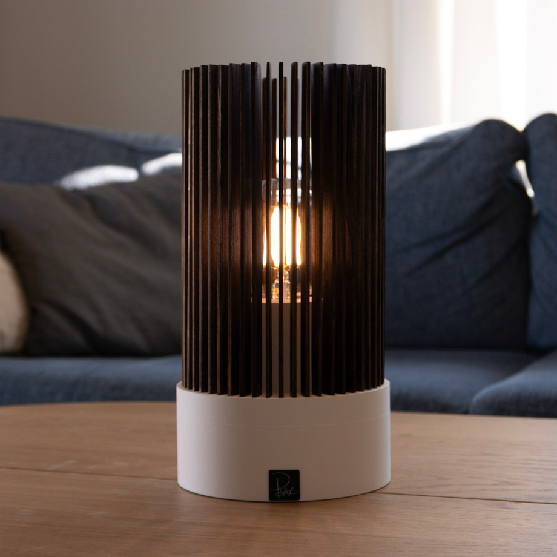
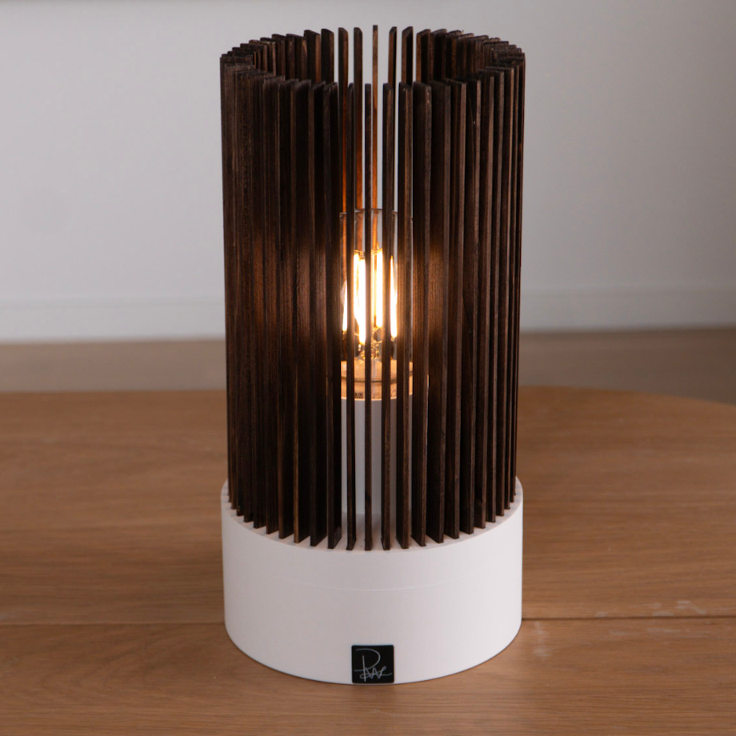
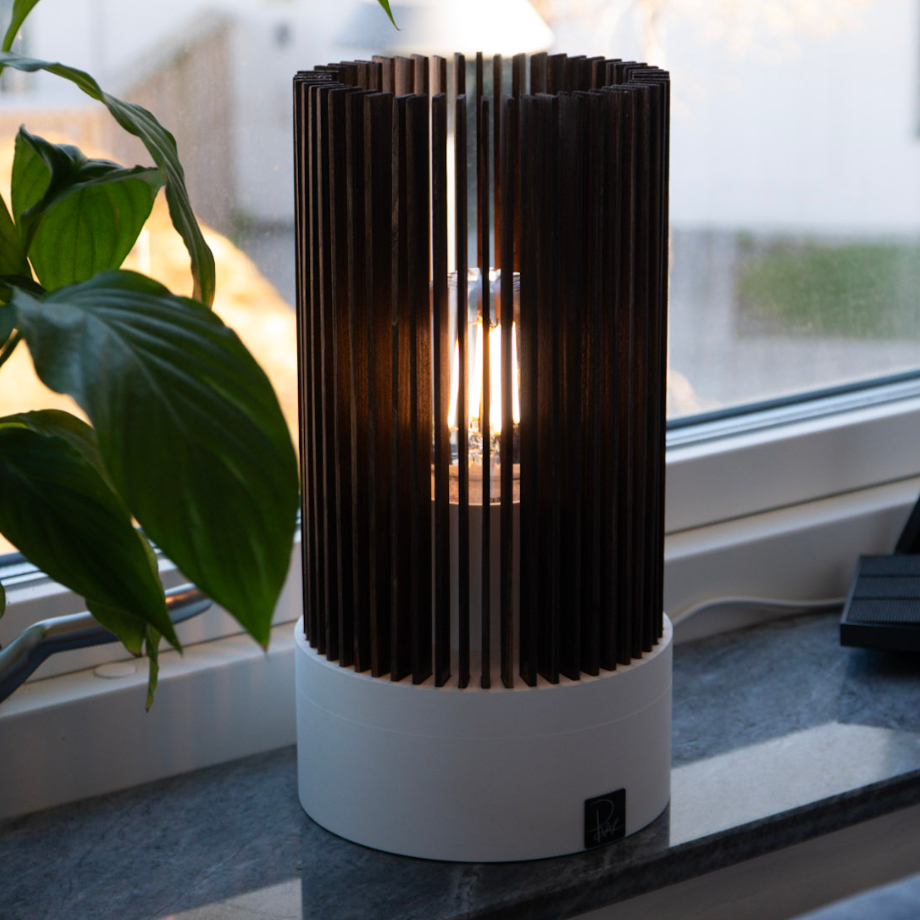
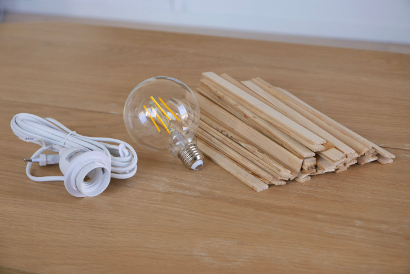
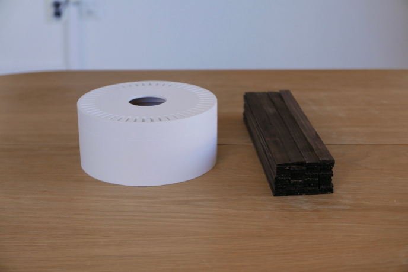
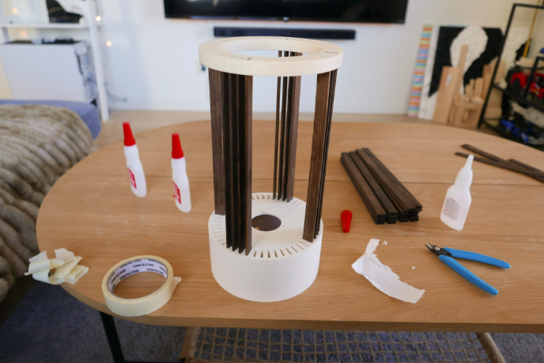
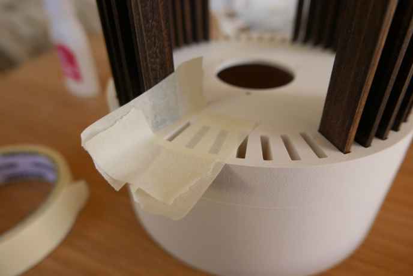

Köpte mig en massa små träpinnar för att bygga något med
Tro det eller ej men de blev en lampa




Jag köpte en sån lite cool stor lampa som man ser tråden i som jag ville göra något med
Sen hittade jag att man kunde köpa ett packe med träpinnar för en billig peng
Match made in heaven

Jag började med att leta igenom alla pinnarna för att hitta 50 stycken som va typ samma storlek
Sen slipade och betsade jag dem
Basen är bara 3D printad i några delar. Basen, lamphållare och en bottenplatta

För att limma alla pinnarna raka så gjorde jag en liten guide som sitter i toppen
Det är typ 12 hål i toppen men resten är täckta så alla blir i samma höjd och raka
Va ganska pilligt att sätta fast guiden efter ett tag men funkade nog ändå bättre än förväntat

Det va lite varians på tjockleken mellan de olika pinnarna så fick hälla på ganska bra med lim i hålen
Använde tejp runt hålen för att göra de enklare att få bort limmet som spiller över när man trycker ner pinnarna